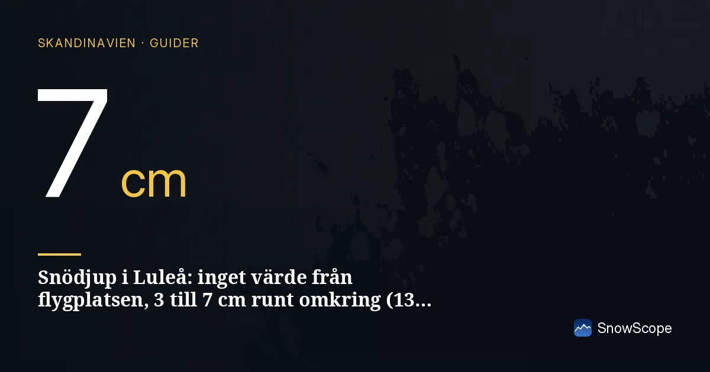

Snödjup i Luleå: inget värde från flygplatsen, 3 till 7 cm runt omkring (13 november 2026)
Luleå själv var tyst på fredagen, men vädertstationerna runt staden rapporterade alla sitt första snötäcke för säsongen. Från kusten till de inlandshöga områdena mätte varje väderstation runt Luleå mellan 3 och 7 cm, vilket tyder på att staden själv har fått ett tunt vitt lager under fredagens molniga himmel.
Se snöprognosen för Luleå live i SnowScope-appenSnödjup, pudervarningar och 3D-kartan, gratis.
Vad stationerna såg
Klöverträsk, 35 km väster om Luleå, nådde 5 cm. Brännberg, längre inne vid 93 m höjd, också 5 cm. Nere vid kusten vid Piteå var djupet mindre på 3 cm, medan Kalix i norr mätte 4 cm. Klockarträsk, den högsta i gruppen vid 148 m, nådde 7 cm—den djupaste mätningen på morgonen. Veniksel, nordöst om Luleå vid 75 m höjd, mätte 3 cm.
Alla dessa stationer hade bar mark på torsdagen. På fredagsmorgonen, efter snö över natten och en lätt morgonfas, hade de alla ett färskt täcke. Enhetligheten över detta område—ingenting djupare än 7 cm, ingenting grundare än 3 cm—pekar på en enda, stadigt snöhändelse som täckte hela området från havsnivå till de låga höjderna.

Hur detta jämför med tidigare november-månader
SnowScope innehåller 46 tidigare vintrar med snörekord för området. Den 13 november låg snö på marken i 31 av dessa vintrar. Typiska djupet för detta datum är 2 cm, men en av fyra vintrar såg 6 cm eller mer. Den högsta mätningen som någonsin registrerats var 34 cm. Så de 3 till 7 cm som mättes denna vecka ligger helt inom det normalt-till-bra området för mitten av november.
Tittar vi tillbaka på de senaste fem säsongerna: 2021-22 hade 1 cm, 2022-23 hade ingenting alls, 2023-24 hade 9 cm, 2024-25 hade bar mark, och förra året (2025-26) hade 3 cm. Denna fredags läsning passar perfekt in i det mönstret—varken ett bannerår eller en besvikelse, bara vad många november-månader för till Norrbotten.
Vad som kommer härnäst denna säsong
Den första snön säger oss lite om vad som ligger framför oss, men historien gör det. Den 1 december når typiska djupet här 7 cm. I mitten av december klättrar det till omkring 11 cm. I mitten av januari stannar det nära 27 cm. Så det som anländer nu är öppningskapitlet; huvudhistorien bygger långsamt genom december och in i det nya året.
En robust botten existerar ännu inte. Tidig säsongs-snö ligger ofta löst på bar mark eller mossa, och vind eller regn kan sprida den eller binda den till ishinnor. Denna fredag för kanske 3 cm till, fortfarande vid temperaturer bara under noll. Lördagen blir kallare—omkring -8 °C på sin lägsta—med endast lätt puder. Söndagen tillför 1 till 2 cm när luften värms mot 3 °C på eftermiddagen.
Fredag till måndag: första veckan med snö
Fredagen är stadigt snöfall vid några grader under noll, adderat till det som föll över natten. Lördagen blir skarpare—klart eller delvis molnigt, med den kalla temperaturen som sjunker in. Det är den sortens kall morgon då snön gnisslar under fötterna och luften sticka i ansiktet. Söndagen förändras: mer snö på morgonen, fortfarande lätt, sedan moln bryter och värmen klättrar mot fryspunkten.
Måndagen är vändpunkten. Regn ersätter snön. Mellan 5 och 8 mm vätskevatten kommer att falla medan temperaturen svävar omkring 1 eller 2 °C. Det räcker för att suga in i det nya täcket, binda det ihop, och sedan frysa det på tisdagsmorgonen när vinden vänder norrut igen och termometern sjunker.
Vad detta betyder för stranden och inlandsslingorna
Lördagen, med sin torra kyla och klara sol, inbjuder till första promenaden på den snöiga marken runt staden. Kustslingorna kommer att vara sprö och behaglig, ljuset plant och klart. Söndagen fungerar också om du inte är emot en och annan lätt snöflingor.
Måndagens regn är en verklighetscheck. All is på vägar, trappor, eller runt dörren kommer att vara farligt på tisdagsmorgonen. Salt och grus bör läggas ned innan frysningen kommer. Viken och älven är inte frusen: vit strand eller isig utseende betyder inte säker passage. Stanna på land.
Tips för skidåkare
- Lördagen är den bästa dagen denna vecka för första vinterturen: torra, kallt, och den nya snön kommer fortfarande att vara puder under fötterna.
- Måndagens regn fryser hårt på tisdagsmorgonen; behandla alla utomhusytor som isiga tills solen får värme.
- Tidig säsongs-snö binder dåligt till bar mark; vägar kan bli halka snabbare än du förväntar dig när regn och frysning-cykeln börjar.
- Viken är inte säker att lita på: en vit strand betyder inte att vattnet under är helt frusen. Stanna på vägar och vägar.
- Lagra bergssalt eller grus nu; tisdagsmorgonen kräver det på varje dörrsteg och sluttning.
Om siffrorna
Snödjupen för skidorterna är det djupaste snötäcket på ortens övre backar på det angivna datumet; de är uppskattningar för ett område, inte en mätning på en punkt. Prognoser kan ändras. Läs alltid den officiella lavinprognosen innan du åker offpist.
Citera den här rapporten
För forskning, undervisning eller press: siffrorna och diagrammen får återanvändas fritt under CC BY 4.0 med den här källhänvisningen.
SnowScope (2026), Snödjup i Luleå: inget värde från flygplatsen, 3 till 7 cm runt omkring (13 november 2026), https://snowscope.app/blog/sv/2026/11/lulea-snow-depth-13-november-2026.html, hämtad 2026-11-13
SnowScope (Atlas Labs). (2026, November 13). Snödjup i Luleå: inget värde från flygplatsen, 3 till 7 cm runt omkring (13 november 2026). SnowScope snow reports. https://snowscope.app/blog/sv/2026/11/lulea-snow-depth-13-november-2026.html
BibTeX
@misc{snowscope2026luleasnowdepth13november,
author = {{SnowScope (Atlas Labs)}},
title = {Snödjup i Luleå: inget värde från flygplatsen, 3 till 7 cm runt omkring (13 november 2026)},
year = {2026},
month = nov,
howpublished = {\url{https://snowscope.app/blog/sv/2026/11/lulea-snow-depth-13-november-2026.html}},
note = {Published 2026-11-14 13:29 UTC; accessed 2026-11-13}
}· CC BY 4.0 · Metoder, data och verktyg →
Följ Luleå
Gratis: ett meddelande när nysnö är på väg, och prognosen varje morgon.